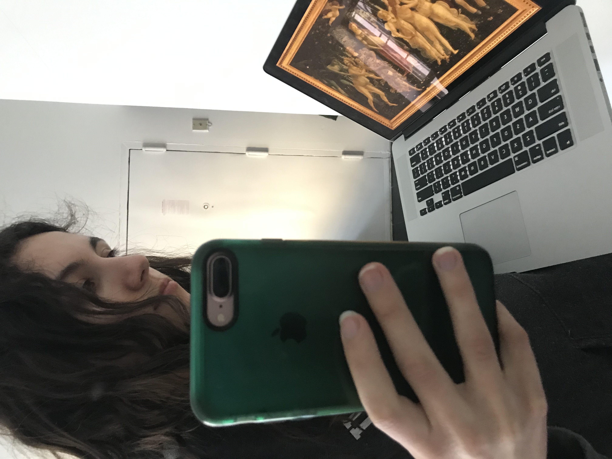

<DOCTYPE html>
<html>
     <body>
        <h1> 
        on screen
        </h1>
        
        <p> 
        At home, I can see the same picture. 
        I can no longer see the brush strokes. 
        I can zoom in instead.
        </p> 

    </body>